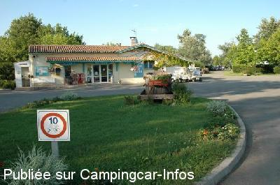
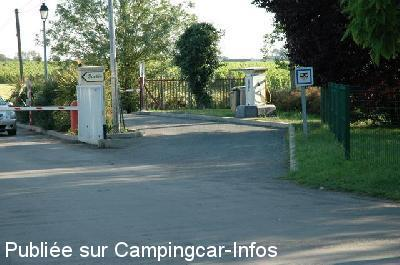
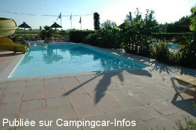
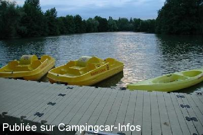
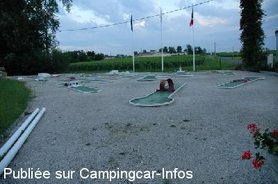

AC = Camping acceptant les camping-cars de :
SAINT ÉMILION
(N° 446)
Accès/adresse :
Route de Montagne
Camping du Domaine de la Barbanne***
33330 SAINT ÉMILION
Camping du Domaine de la Barbanne***
33330 SAINT ÉMILION
Latitude : (Nord) 44.91659° Décimaux ou 44° 54′ 59′′
Longitude : (Ouest) -0.14188° Décimaux ou 0° 8′ 30′′
Tarif : 2014
Emplacement, C-C, 2 personnes, électricité 10 A : 22 à 44 €
Personne + 3 ans : 6 à 7 €
Animal : 5 €
Taxe de séjour : 0,61 €
Type de borne : EURO-RELAIS
Services :


Navette gratuite pour le village
Autres informations :
Ouvert du 25/04 au 12/10
Emplacements, plats et délimités par des haies
Tel : +33(0)557 247 580
info@camping-saint-emilion.com
http://www.camping-saint-emilion.com

Le 02/07/2007 par M. Foucault

Le 02/07/2007 par M. Foucault

Le 02/07/2007 par M. Foucault

Le 02/07/2007 par M. Foucault

Le 02/07/2007 par M. Foucault
de
vincent
le 23/06/2011 :
Accueil très professionnel.Les emplacements sont vraiment corrects en superficie et séparés par des haies naturelles pour plus d'intimité. Sanitaires propres,piscine chauffée, navettes gratuites pour St Emilion...plus de renseignement sur leur site (tarif selon saison: de 18 à 39 euros)
Accueil très professionnel.Les emplacements sont vraiment corrects en superficie et séparés par des haies naturelles pour plus d'intimité. Sanitaires propres,piscine chauffée, navettes gratuites pour St Emilion...plus de renseignement sur leur site (tarif selon saison: de 18 à 39 euros)
de
Rougui
le 08/10/2009 :
De passage encore cette année fin juillet, je recommande ce site ou ce camping (comme vous le désirez) tenu par la famille DECAMP :
--Renseignements utiles : supérette au camping avec dépôt de pain, bouangerie à MONTAGNE -33-, très calme. La commune de SAINT EMILION située à environ 7 Kms (à faire en vélo sans problème).
-- Seulement de passage, il vous en coutera 5€ pour utiliser l'aire de services.
Nous sommes restés plusieurs jours et nous avons payé : 34 € la nuitée - 8,95 € l'électricité - 3,50 € pour un animal - 0,50 € de taxe de séjour (tarif 2009) - accés gratuit à l'aire de services.
-- Comme j'ai déjà précisé, c'est un camping très calme, énormément fréquenté par la gente anglaise. De petites animations en début de soirée sont proposées. Excellent endroit pour se reposer avant les plages bordelaises... Nous pouvons seulement avoir accès à l'aire de services et aller stationner dans l'agglomération de SAINT EMILION, en bordure de route, derrière la Gendarmerie Nationale (trop bruyant) ...
De passage encore cette année fin juillet, je recommande ce site ou ce camping (comme vous le désirez) tenu par la famille DECAMP :
--Renseignements utiles : supérette au camping avec dépôt de pain, bouangerie à MONTAGNE -33-, très calme. La commune de SAINT EMILION située à environ 7 Kms (à faire en vélo sans problème).
-- Seulement de passage, il vous en coutera 5€ pour utiliser l'aire de services.
Nous sommes restés plusieurs jours et nous avons payé : 34 € la nuitée - 8,95 € l'électricité - 3,50 € pour un animal - 0,50 € de taxe de séjour (tarif 2009) - accés gratuit à l'aire de services.
-- Comme j'ai déjà précisé, c'est un camping très calme, énormément fréquenté par la gente anglaise. De petites animations en début de soirée sont proposées. Excellent endroit pour se reposer avant les plages bordelaises... Nous pouvons seulement avoir accès à l'aire de services et aller stationner dans l'agglomération de SAINT EMILION, en bordure de route, derrière la Gendarmerie Nationale (trop bruyant) ...
de
Michel Foucault
le 02/07/2007 :
Bonjour. Superbe camping, avec toutes les prestations incluses dans le prix, principalement sa piscine chauffée. Les tarifs ont évolués Hors Juillet/Aout c'est 16 ou 20€(220V) l'emplacement 15M*9M plan, goudronné, arboré et ombragé.
Nouveau: Long séjours 11 Nuits facturées pour 14 passées. Juillet/Aout, c'est 28 à 30€ et non 40€ comme indiqué ci-dessous. Une sélection de vins et même prix qu'à la propriété pour le SaintEmilion Grand Cru.
Je recommande cette étape de grande qualité!
Bonjour. Superbe camping, avec toutes les prestations incluses dans le prix, principalement sa piscine chauffée. Les tarifs ont évolués Hors Juillet/Aout c'est 16 ou 20€(220V) l'emplacement 15M*9M plan, goudronné, arboré et ombragé.
Nouveau: Long séjours 11 Nuits facturées pour 14 passées. Juillet/Aout, c'est 28 à 30€ et non 40€ comme indiqué ci-dessous. Une sélection de vins et même prix qu'à la propriété pour le SaintEmilion Grand Cru.
Je recommande cette étape de grande qualité!
de
Michel Foucault
le 02/07/2007 :
Vous trouverez toutes les infos sur le site du domaine: http://www.camping-saint-emilion.com/
Vous trouverez toutes les infos sur le site du domaine: http://www.camping-saint-emilion.com/
de
stef34
le 09/08/2005 :
Magnifique camping. Mais bon 40€ la nuit pour deux adultes, deux enfants, chien... Heureusement tout est compris : accès à la borne, piscine, mini-golf, pédalo, pêche, tennis. A 15 minutes en vélo de Saint Emilion.
Magnifique camping. Mais bon 40€ la nuit pour deux adultes, deux enfants, chien... Heureusement tout est compris : accès à la borne, piscine, mini-golf, pédalo, pêche, tennis. A 15 minutes en vélo de Saint Emilion.